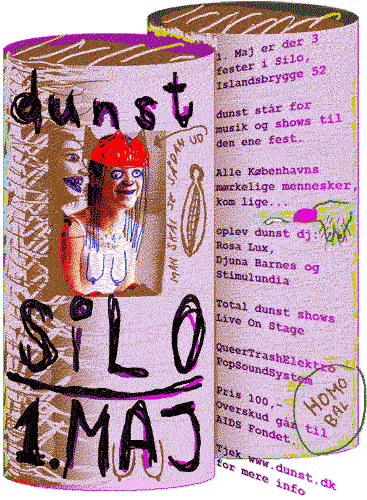
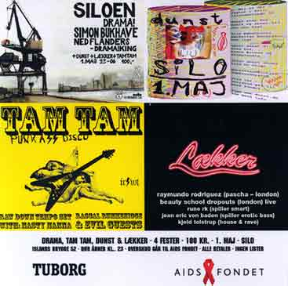

| SILO | 1. Maj - 2004 |
 Dørrene åbner kl. 23. Hovsa! Der er 4 fester: 1. dunst: Os selv, og underlige mennesker. på lørdag er det 1.maj, det kan være solen den skinner. måske har du været ude til en de der helt store homodemoer, med en rullende karavane af fimse ildgøgl fra amager, glad og maskeret lebbeblok, female fist workshop live, syklubben fra helvede, skaterpiger der spiller plader og snaver mens de gør det, slagord under vand ved miss fish, elektropunkraver stop og appelsin dans.... når har du ikke... så er det jo godt at, vi har noget der ligner. hele natten efter solen er gået ned og dæmonerne kommer så dejligt ud. Vi nemlig et rum i noget på islands brygge der hedder silo, i de andre rum holder nogle andre til, det er dem her: 2. Tamtam: Søde lidt blege rockfyre med kasketter der måske kan lokkes af. Piger med det helt skarpe pandehår og itu-revne bluser, (så nogle er altid lidt lesbiske) de holder normalt til på stereobar og stengade 30. 3. Drama: Samme slags rockfyre fra stengade, lidt mere engelske 4. Lækker: Alle de smarte og de kendte der gerne vil være venner med dunst....  |
|